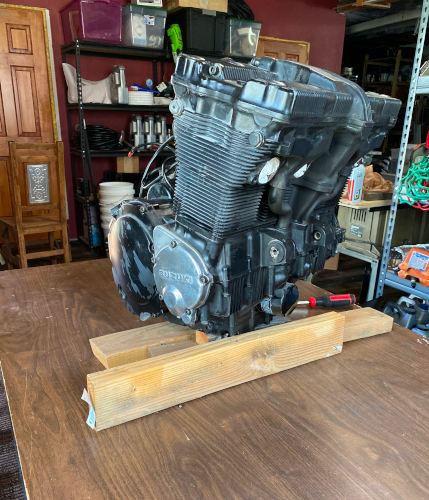
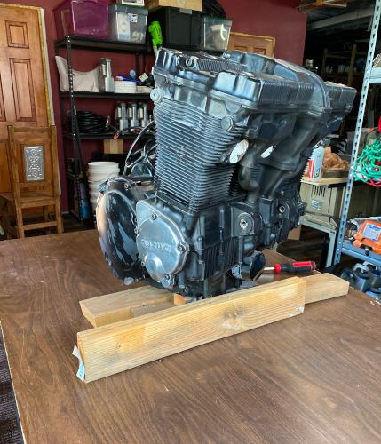
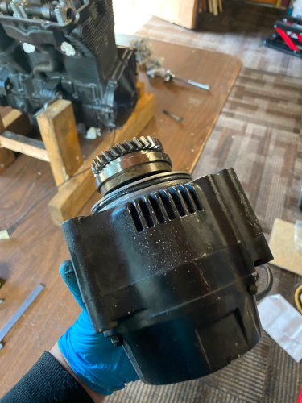

Got the wire harness out, it doesn't look too bad in this picture but some wires have been repaired with a newer wire with a DIFFERENT COLOR... WHY ?!?!?! and instead of a proper solder joint and a shrink-tube someone thought it was better to use WIRENUTS 😖 to me that's like nails on a Blackboard. I am not sure what to do with this - at the moment of writing I am considering junking the existing harness and re-wire the whole bike, that way I can also make some sort of controller for the bikes electrical system, route the wires inside the frame for a cleaner look and use some more modern components.


I am missing picures of the progress, but I got everything taken off the bike, layed it on its side and managed to hoist the engine out to get it situated in a 'cradle'.
 


I was worried about what I would find under the cover but was relieved when I saw nothing broken, bend, burned or even unusual discolored. I'll likely find worn parts as I dig deeper and start measuring - so far so good....


Here was the first one, and I expect to find many more of these 🤬 rusted-in-place bolts. This one was holding a rubber boot to one of the intake ports. The bolt was rusted in place to where I eventually destroyed the head trying to get it out, luckily it wasn't fused to the engine so after being pursuasive with rust-dissolver and a Mr. Tungsten-bolt-remover-3000, it gave up the fight.

Alternator is out.


Next I took off the clutch cover ... yikes! how does water get in here? Luckily it's only surface rust and I was able to get it to look decent but the remaining metal is pitted, even on the inside where the it touch the 'fingers' of the clutch plates. I doubt this will affect the health or performance of the engine as the outer surface doesn't mate to anything else and I got the 'grooves' on the inside smoothed out so the clutch plates doesn't catch any rust or pitts. Changing from water to oil will likely prevent this from happening again anytime soon.


Head came off, I don't see any burnt valves or pistons, only some carbon build-up.